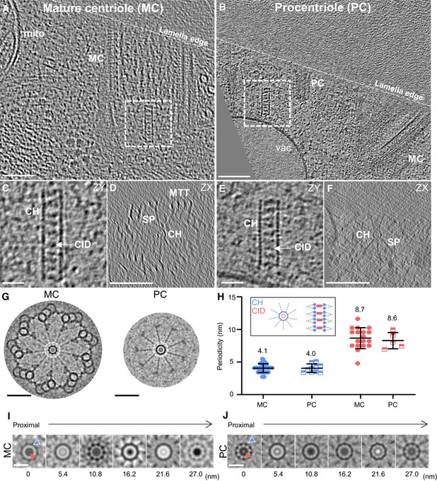

basal body cartwheel
A proteinaceous hub-and-spoke assembly at the proximal region of a microbial ciliary basal body or pro-basal body. Its central hub bears nine radially arranged spokes that connect toward the surrounding microtubules; the hub and spokes extend longitudinally as a stacked scaffold. [DOI:10.15252/embj.2020106246]

NCBITaxon:3055) · Nikolai Klena, Maeva Le Guennec, Anne‐Marie Tassin, Hugo van den Hoek, Philipp S Erdmann, Miroslava Schaffer, Stefan Geimer, Gabriel Aeschlimann, Lubomir Kovacik, Yashar Sadian, et al.; CC BY, via PubMed Central · CC_BY_4_0 · source: PMC PMC7667884.1 embj2020106246-fig-0001 · DOI:10.15252/embj.2020106246Synonyms: centriole cartwheel
Part of: GO:0036064 GO:0120280
Components
| Component | Type | Part of / acts on | Grounding | Genes | Stoichiometry | Essential | Role |
|---|---|---|---|---|---|---|---|
| SAS-6 | PROTEIN | part of | REVIEWED_LABEL_ONLY | SAS6, BLD12, CrSAS-6 | UNKNOWN | Structural constituent of the central hub and radial spokes. Recombinant Chlamydomonas SAS-6 forms ring-based assemblies, but this does not establish complete native composition or a fixed copy number per cartwheel.
| |
| Bld10/Cep135 | PROTEIN | part of | REVIEWED_LABEL_ONLY | BLD10, CEP135 | UNKNOWN | Cartwheel-associated structural protein localized to radial fibers in Chlamydomonas. Its C-terminal fragment supports organized core-cartwheel reconstitution with full-length SAS-6; this does not assign the complete protein to a single density or establish universal cartwheel essentiality.
|
Organism-specific protein examples
Named proteins in which each component's role was established, with the organism the evidence comes from. The component above is the taxon-agnostic family; these are the specific entries behind it.
SAS-6
| Accession | Protein | Gene | Organism | Entry |
|---|---|---|---|---|
UniProtKB:A9CQL4 | Centriole protein | CrSAS-6 | Chlamydomonas reinhardtii (NCBITaxon:3055) | UNREVIEWED |
Role and evidence (2 references)Chlamydomonas SAS-6; the native UniProt entry retains its submitted name and CrSAS-6 gene symbol. This is a TrEMBL entry, not reviewed Swiss-Prot.
| ||||
Bld10/Cep135
| Accession | Protein | Gene | Organism | Entry |
|---|---|---|---|---|
UniProtKB:A8ID55 | Basal body protein 10 | BLD10 | Chlamydomonas reinhardtii (NCBITaxon:3055) | REVIEWED |
Role and evidence (2 references)
| ||||
Canonical examples
NCBITaxon:3055Chlamydomonas reinhardtii — In-situ cryo-FIB/cryo-ET of mat3-4 cells resolves cartwheels in mature basal bodies and pro-basal bodies. This is a native cellular sample, not a recombinant cartwheel reconstitution. [DOI:10.15252/embj.2020106246]NCBITaxon:5888Paramecium tetraurelia — Cartwheels characterized by cryo-ET and subtomogram averaging of isolated cortical units from d4-2 and delta-CenBP1 strains. The example does not assert identical cartwheel length or spoke-fusion geometry across species. [DOI:10.15252/embj.2020106246]NCBITaxon:5762Naegleria gruberi — Isolated basal bodies from NEG cells differentiated into flagellates. Cartwheel periodicities were measured in undamaged regions because specimen preparation often compressed the basal bodies; this is not an assertion that amoeboid cells retain a cartwheel. [DOI:10.15252/embj.2020106246]
Functions
- ciliary basal body organization
GO:0032053— Provides a central radial scaffold linking the hub toward the surrounding microtubules in the proximal basal-body region. This structural role does not imply that the cartwheel alone determines microtubule number or that its absence abolishes every form of basal-body assembly.DOI:10.15252/embj.2020106246Native reconstructions resolve the hub, spokes and peripheral connections. Static architecture does not establish a growth time course.DOI:10.1038/ncomms14813
Physical properties
- DIAMETER: 22.4 +/- 1.3
UO:0000018(Central-hub diameter in isolated Chlamydomonas reinhardtii pro-basal bodies, Figure 1 of Guichard et al. 2017; reported value and error, n=10 measurements from five tomograms. The caption does not specify the error statistic. This is not the full spoke-to-spoke cartwheel diameter.) [DOI:10.1038/ncomms14813] - OTHER: 4.1 +/- 0.67
UO:0000018(Axial central-hub density spacing in mature Chlamydomonas reinhardtii basal bodies imaged in situ in Klena et al. 2020, Figure 1; mean and SD, n=30 distances. Not a universal ring-pair repeat or whole cartwheel length.) [DOI:10.15252/embj.2020106246] - OTHER: 8.7 +/- 1.6
UO:0000018(Axial spacing of cartwheel inner densities in the mature Chlamydomonas reinhardtii in-situ sample, Figure 1; mean and SD, n=18 distances. Inner-density occupancy is not uniform throughout every cartwheel.) [DOI:10.15252/embj.2020106246]
Discussions
- CURATION_TODO (RESOLVED): Distinguish a cartwheel record from its basal-body parent and neighbors. A named hub-and-spoke subassembly is not a single protein or an entire basal body.
- CURATION_TODO (OPEN): Find exact taxon-agnostic groundings for SAS-6 and Bld10/Cep135. Domain matches and a broader paralog family are not whole-family equivalents.
- CURATION_TODO (RESOLVED): Keep reconstruction periodicities and reconstitution models scoped. Native ring organization, artificial arrays and model fits are different kinds of evidence.
- CURATION_TODO (OPEN): Assess the full 2026 Trichonympha cartwheel study before adding its molecular model or deposits. Metadata and an abstract do not support an audited native model.
- CURATION_TODO (RESOLVED): Do not label neighboring triplet deposits as cartwheel maps. Sharing a publication does not establish structural equivalence.
Evidence
DOI:10.15252/embj.2020106246Klena et al. 2020, PMID:32954513. Checksum-verified PMC7667884.1 JATS Results, Discussion, cartwheel Methods and figure captions inspected; Figure 1 visually inspected. Native architecture and taxon-specific measurements are distinguished from proposed molecular assignments.DOI:10.1038/ncomms14813Guichard et al. 2017, PMID:28332496. Checksum-verified PMC5376648.1 Results, Discussion and Methods inspected. Native core-cartwheel morphology and recombinant sufficiency experiments have different scopes.DOI:10.1083/jcb.200402022Matsuura et al. 2004, PMID:15173189. Checksum-verified PMC2172387.1 Results, including localization, immuno-EM and mutant/rescue experiments, inspected. No media from this noncommercial-licensed article are hosted.
Curation history
2026-10-04T12:59:58Zcodex · CREATED_RECORD — Scaffolded by scripts/new_record.py2026-10-04T13:02:54Zcodex · CURATED_RECORD — Added source-scoped cartwheel identity, constituents and protein examples, three microbial examples, native measurements and an inspected CC BY 4.0 figure. Documented grounding, model and deposition boundaries and the unread 2026 full-text follow-up.
Source: data/structures/cytoskeleton/basal_body_cartwheel.yaml